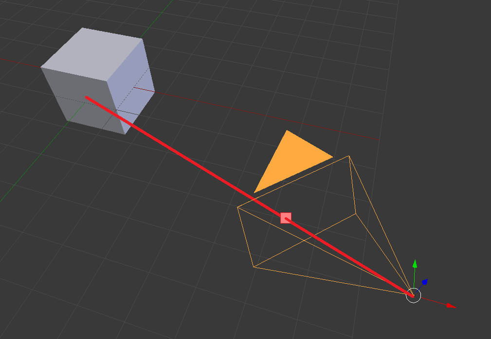
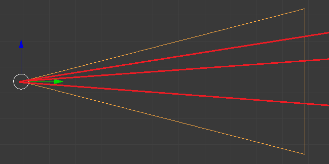
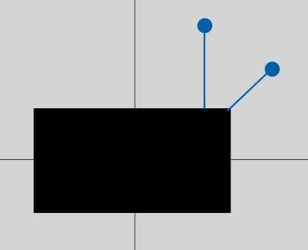
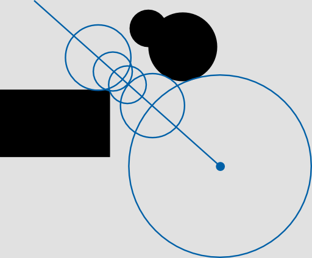

Live coding setup
4 vertices - just a fullscreen quad
// Vertex shader
uniform vec2 resolution;
attribute vec2 position;
varying vec2 uv;
void main()
{
uv = position;
// compensate for screen ratio
uv.x *= resolution.x / resolution.y;
gl_Position = vec4(position, 0.0, 1.0);
}
Traditional offline rendering
Shoot rays from camera
Intersect with scene geometry

Position
One ray per pixel
FOV?

Need to compute ray-geometry intersection
Simple plane example (y = 0)
float intersectPlane(vec3 pos, vec3 dir)
{
return -pos.y / dir.y;
}
Distance to closest surface, defined for every point in space
map(position) -> distance
float plane(vec3 pos)
{
// signed distance to plane y = 0
return pos.y;
}

float intersectSphere(vec3 pos, vec3 dir)
{
// solve pos + k*dir = unit sphere surface
// dot(pos + k*dir, pos + k*dir) = 1
// quadratic coefficients
float a = dot(dir, dir);
float b = 2.0 * dot(pos, dir);
float c = dot(pos, pos) - 1.0;
float discriminant = b * b - 4.0 * a * c;
// only the positive root is useful
return (-b - sqrt(discriminant)) / (2.0 * a);
}
float sphere(vec3 pos, float radius)
{
return length(pos) - radius;
}

Box
float box(vec3 pos, vec3 size)
{
return length(max(abs(pos) - size, 0.0));
}
Rounded Box
float box(vec3 pos, vec3 size, float radius)
{
return length(max(abs(pos) - size, 0.0)) - radius;
}
Any math function works!
mod()
sin()
abs()
etc.
Simple procedural materials
Fake lighting
Normals
BRDFs
Scattering
Occlusion
Other ideas?
Very flexible, but slow
Some optimizations work (e.g. bounding boxes)
Perfect candidate for raymarching